In this step, you'll explore the essential tools every mechanic needs to kickstart their journey in automotive repair. Mastering these tools and their proper usage will lay the foundation for successfully performing repairs and maintenance. Let's dive into the key tools and their applications:
- Wrenches:
Wrenches are fundamental tools used to tighten or loosen nuts and bolts. There are various types of wrenches, including:
-
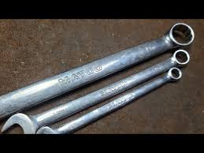
- Combination Wrenches: Feature an open-end on one side and a box-end on the other, providing versatility for different fasteners.
- Adjustable Wrenches: Also known as crescent wrenches, they can be adjusted to fit various sizes of nuts and bolts. 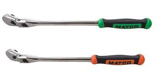
- Socket Wrenches: Used with socket sets, they allow for easier turning of bolts, especially in tight spaces. 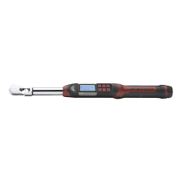
- Torque Wrenches: Essential for tightening bolts to a specific torque, ensuring components are properly secured without being over- or under-tightened.

- Screwdrivers:
Screwdrivers are used for turning screws and are indispensable for both minor and major repairs. Common types include:
-
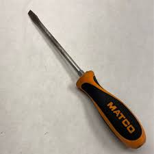
- Flathead Screwdrivers: Used for slotted screws, common in older vehicles and basic applications. 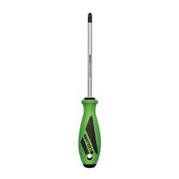
- Phillips Screwdrivers: Designed for cross-head screws, which are widely used in automotive assemblies. 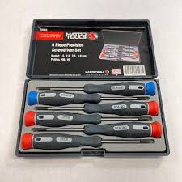
- Precision Screwdrivers: Smaller screwdrivers ideal for delicate tasks, such as working on electronic components or dashboard panels. 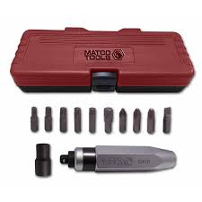
- Impact Screwdrivers: Useful for loosening stubborn screws with a hammer strike, particularly in high-torque areas.
- Socket Sets:
Socket sets are a mechanic’s best friend when it comes to dealing with a variety of nuts and bolts. A comprehensive socket set typically includes:
-
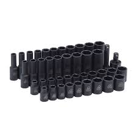
- Standard and Metric Sockets: Ensure you have both to handle different vehicles, as some use imperial measurements while others use metric. 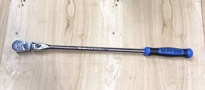
- Ratchets: Used with sockets for efficient tightening or loosening without removing the tool from the fastener. 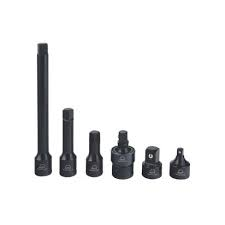
- Extensions and Adapters: Allow you to access hard-to-reach bolts, enhancing the versatility of your socket set. 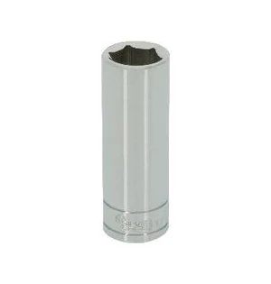
- Deep Sockets: Necessary for reaching bolts that are recessed or protruding from long studs. 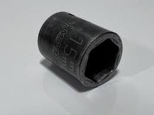
- Shallow Sockets: When height is limited and deep sockets will not fit.
- Multimeter:
A multimeter is an essential diagnostic tool for any mechanic working with electrical systems. It measures various electrical parameters, including:
-
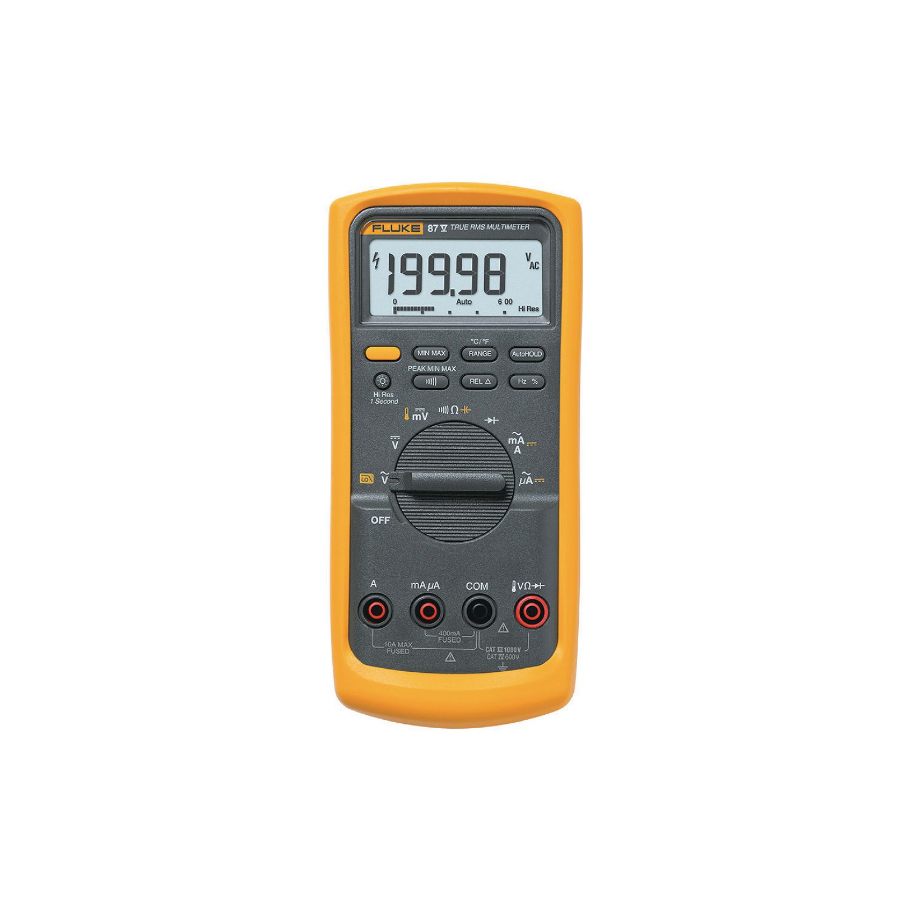
- Voltage (V): Used to check battery voltage, alternator output, and ensure proper power supply to various components.
- Current (A): Helps diagnose electrical circuits for current flow issues and detect shorts.
- Resistance (Ω): Essential for checking continuity in wires and diagnosing faults in sensors or fuses.
- Advanced Functions: Some multimeters also include settings for checking temperature, capacitance, and frequency, providing a comprehensive diagnostic capability.
Learning to use a multimeter effectively will empower you to troubleshoot complex electrical issues, a critical skill in modern automotive repair.
Understanding these tools and their proper use is fundamental to performing even the most basic repairs. As you grow your skills, you'll discover the importance of quality tools, proper maintenance, and safe handling practices. Building a strong foundation with these essential tools will set you on the path to becoming a skilled and confident mechanic.